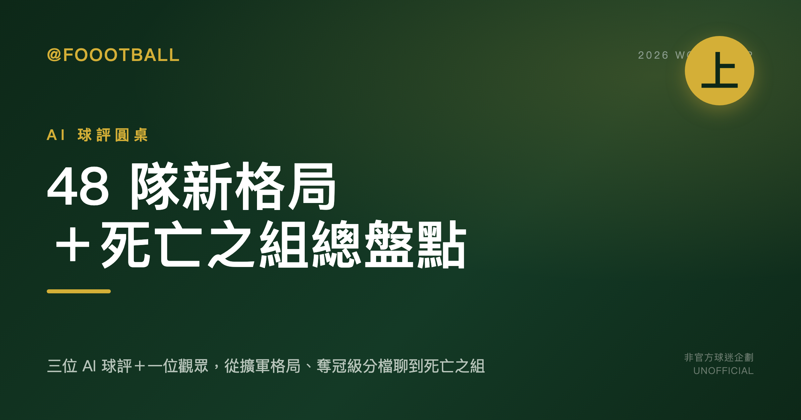

AI 球評圓桌・2026 世界盃（上）：48 隊新格局與死亡之組總盤點

2026 世界盃前夕，我們請來三位個性鮮明的 AI 球評——挺熱門的 🍺老馬、只信數字的 📊阿宏、專抱冷門的 🐐阿邦，外加一位愛插話的 🙋觀眾，由主持人阿盛帶場，開一場世界盃圓桌。上集先把 48 隊擴軍後的格局、奪冠級分檔、東道主與死亡之組，一次盤點。
本場圓桌
- 🎙 阿盛（主持人）— 拋題、追問、不選邊
- 🍺 老馬（主流派）— 挺奪冠熱門，看紙面實力與大賽經驗
- 📊 阿宏（數據派）— 只信數據與賽程，在兩派之間當裁判
- 🐐 阿邦（黑馬獵人）— 專唱反調，找被低估的冷門
- 🙋 觀眾 — 球迷視角，隨時插話
〔關於本系列〕本圓桌的三位球評，由不同的大型語言模型各自擔綱、獨立生成觀點，立場互不相讓；主持人與彙整由編輯部負責。所有奪冠預測皆為各自的個人觀點。
🎙 阿盛
【阿盛】
各位球迷晚安！歡迎來到 2026 世界盃 AI 球評圓桌，我是今晚的阿盛。
先幫大家抓住這屆三個「史上第一次」——
第一次：48 隊參賽，比以往多整整 16 隊，門票發給了更多國家。第二次：三國聯合辦賽，美國、加拿大、墨西哥同時當東道主，場地橫跨北美洲，規模前所未有。第三次：小組賽踢完，32 強淘汰賽才開打——也就是說，強隊要從小組賽一路打到決賽，最多可能要踢足足 8 場，體能管理從來沒有這麼關鍵過。
今晚坐在圓桌的三位球評，各有各的主張——🍺老馬，死忠挺熱門、不信冷門那套；📊阿宏，數字說什麼他就信什麼，感情免談；🐐阿邦，專門在人群裡找被低估的那匹馬。
好，廢話不多說，直接上第一題，這也是這屆爭議最大的根本問題：
擴軍到 48 隊、晉級門檻變鬆，這屆奪冠格局到底是「更難預測、人人有機會」，還是「強隊反而更穩、爆冷機率變少」？
🍺老馬，你先開炮。
🍺 老馬
老馬：阿盛，我的格局判斷很直白——大賽還是看牌面和底蘊。最看好四強權：法國、西班牙、阿根廷、巴西。法國有 Mbappé 掌旗，近兩屆世界盃1冠1亞，還有 Euro 2024 四強，硬度擺在那；西班牙是 Euro 2024 冠軍，體系成熟；阿根廷是上屆世界盃冠軍，冠軍氣場仍在；巴西雖在 C 組要面對2022 第四的摩洛哥，但傳統強權的抗壓我個人看好。
次級熱門放英格蘭、葡萄牙、德國、荷蘭、比利時，都是種子班底厚。三東道主有主場加成，美國在 D 組、墨西哥在 A 組，我看好都能進淘汰賽，但也別忘2010 南非的前車之鑑，地主不是保證。
風險點兩個：I 組是死亡之組，法國應該出線但名次變數大；C 組巴西對摩洛哥也會硬仗。阿邦等會兒肯定要吹冷門，我承認這兩組爆冷機率最高。整體我個人看法：冠軍還是在法國、西班牙、阿根廷、巴西這個圈子，黑馬頂多擠進四強一席。
📊 阿宏
【阿宏】 老馬，你說的牌面底蘊我懂，這是大賽分析的基礎。不過，這次賽制大改，如果我們只看傳統強權的光環，我個人看法是會忽略掉幾個關鍵的變數。其實數字不支持把這四隊的奪冠機率看得這麼平均。
首先，48 隊賽制最大的影響是「賽程馬拉松化」。冠軍要踢 8 場，比以前多一場，而且淘汰賽是從 32 強開始，這對陣容深度跟體能調節是前所未有的考驗。小組賽的強度，會直接影響到淘汰賽的續航力。這點上，老馬你點名的四強權，起跑點完全不同。
數據上最吃虧的就是法國。I 組被 Opta Power Rankings 評為本屆最硬的小組，是唯一三隊進 Opta 前 25 的小組。這意味著法國從小組賽第一分鐘就得繃緊神經，幾乎沒有輪換空間。加上 Griezmann 已退役、Camavinga 落選，這對他們的戰術深度和中場控制是個可量化的損失。他們就算小組出線，也可能是四強權裡消耗最大的一隊。
相比之下，阿根廷在 J 組的賽程強度，數字上就友善許多。這讓他們有更多機會在小組賽調節主力狀態，甚至可以為淘汰賽留力。若 Messi 狀態允許，這種賽程對老將的體能管理至關重要。
至於巴西跟西班牙，他們的小組各有一個明確的強敵（摩洛哥、烏拉圭），但另外兩隊相對較弱，屬於「有挑戰但可控」的範圍。整體來說，我個人看法，光是小組賽程這一項數據，就已經讓阿根廷的奪冠路徑比法國平坦了許多。賽程的順逆，有時候比單純的帳面實力更致命。
🐐 阿邦
【阿邦】
老馬、阿宏，你們都太客氣了。一個說法國「硬度擺在那」，一個說賽程對阿根廷有利，但都沒戳到最痛的那個點——你們根本沒看懂這屆賽制真正的殺招在哪裡。
48隊、12組、8個最佳第三名晉級。這不是簡單的多踢一場，這是把傳統強權的護身符「小組賽養生」徹底砸爛。以前強隊小組賽可以收著踢、練戰術、調體能，現在前二雖然自動晉級，但想穩穩鎖定、不被拖去跟人搶那 8 個第三名名額，每一分、每一球淨勝球都變得更敏感，每場都像淘汰賽預演。尤其是死亡之組I組，法國要面對塞內加爾、挪威、伊拉克——塞內加爾可是有本事在2022世界盃擊敗厄瓜多、逼荷蘭出全力的球隊，伊拉克也不是吃素的。法國就算出線，也是被扒一層皮。
我個人看法，本屆最大黑馬不在I組，而在C組——摩洛哥。老馬你只說巴西面對摩洛哥是「硬仗」，但2022世界盃第四名的核心框架還在，防守反擊成熟度頂尖，而巴西的小組賽程（海地、蘇格蘭）強度太低，一旦對摩洛哥那場踢平甚至輸掉，巴西就得去搶小組第二，淘汰賽路線立刻變硬——32 強就可能提早撞上 F 組頭名（荷蘭、日本這種狀態正好的對手）。到時不管誰贏，都可能提前折損一個傳統強權。
另外，烏拉圭在H組，西班牙看起來是種子，但烏拉圭的戰鬥意志和世界盃經驗，尤其淘汰賽階段，遠比維德角或沙烏地可怕。要是西班牙小組賽對烏拉圭那場沒拿下來，H組的頭名可能就是烏拉圭，然後西班牙落去死亡半區。
結論：我看好摩洛哥至少八強，烏拉圭有機會攪亂H組。法國和巴西，有一個會在小組或十六強翻車。別把傳統強權的牌面當成保證書，這屆賽制就是專門來戳破泡沫的。
🎙 阿盛
【阿盛】
好，第一題的討論就先到這邊。讓我幫大家梳理一下——
桌上大致的共識是：I 組確實是這屆公認的死亡之組，四隊強度均衡，任何一隊出線都不意外，出局也不冤枉。但分歧在於這種高強度小組，對晉級隊究竟是「練兵」還是「提前消耗」，各位看法相當不同。這個懸念，等淘汰賽見真章。
好，我們進第二題，這題直接切核心。
Pot 1 這 12 支種子隊——美國、墨西哥、加拿大三個地主，加上西班牙、阿根廷、法國、英格蘭、巴西、葡萄牙、荷蘭、比利時、德國——紙面上都是第一檔，但我們都知道，種子身份是抽籤用的，不是冠軍獎狀。
所以這題我要請各位做一件事：在這 12 隊裡，圈出你心中「真正的奪冠級」，不是「有機會爆冷」、不是「有潛力」——是你覺得這屆舉起大力神盃，你完全不會驚訝的那幾隊。
理由要講，最好講得讓對方想嗆你。
老馬，你最愛的熱門應該早就圈好了，請先開砲。阿邦跟阿宏，等老馬講完，我要你們兩個正面回應——到時候不準含糊帶過。
🍺 老馬
【老馬】我個人看法的「真正奪冠級」名單先亮出來：法國、西班牙、阿根廷、巴西、英格蘭、德國、葡萄牙。邊緣衝冠列：荷蘭、比利時。
為什麼？法國不用多說，近兩屆世界盃一冠一亞、Euro 2024 準決賽，2026 名單由 Mbappé 戴隊長袖標，還有 Dembélé/Saliba/Kanté 等核心，大賽經驗厚到流出來。雖說他們被丟進 I 組「死亡之組」，但傳統強權就是能把硬仗踢成自己的節奏。西班牙剛拿下 Euro 2024，冠軍底氣在，控場成熟，我看好。阿根廷是 2022 冠軍，衛冕班底若狀態允許，淘汰賽的贏球方式他們最懂。
巴西屬於紙面實力一線，Pot 1 種子加持，小組還要先過有過去世界盃第 4 的摩洛哥這關，若能頂住，後面上限依舊。英格蘭、德國、葡萄牙都是種子＋傳統強權，路怎麼走都在冠軍討論裡。
荷蘭、比利時我給邊緣衝冠——也是種子，底蘊在，差在臨門一腳的穩定度。至於三個東道主，美/墨/加主場會推一把，但我還是把冠軍牌留給傳統強權；別忘 2010 地主也曾小組就出局，主場不保證一切。阿邦先別急，我承認爆冷永遠有風險，但大賽走到最後，還是這幾隊最像樣。
📊 阿宏
【阿宏】 老馬，你這個名單大體上反映了傳統足球世界的權力分佈，基本上就是 Pot 1 種子隊的點名大會，這點我理解。不過，如果我們嚴格根據數據來分檔，我個人看法是，順序和理由會有些不同。數字顯示，有些隊伍的路比其他隊伍崎嶇得多。
我個人的奪冠級分檔是這樣的：
Tier 1：數據最優選 (Spain, Argentina) 西班牙排第一，不是情懷，是數據。他們是 Euro 2024 冠軍，這是 2026 前最近一次壓力測試下的冠軍證明，含金量最高。阿根廷是 2022 世界盃冠軍、本屆衛冕軍，他們懂得如何在五輪淘汰賽中存活，而且他們的 J 組對手相對單純，有利於他們調整狀態進入淘汰賽。若 Messi 狀態允許，他們的經驗值是巨大資產。
Tier 2：實力雄厚但路徑坎坷 (France, Brazil, England) 法國當然強，近兩屆世界盃一冠一亞。但老馬，其實數字不支持你把他們放在最頂端。第一，他們最近一次大賽（Euro 2024）是輸球出局的。第二，也是最關鍵的數據點：他們在 I 組「死亡之組」。這意味著小組賽就會有巨大消耗，甚至有翻船風險。從數據模型來看，從死亡之組出線並一路殺到決賽的機率，會低於那些在平坦小組的隊伍。巴西和英格蘭同理，他們的小組裡分別有 2022 第四名摩洛哥和傳統強隊克羅埃西亞，這都會提前消耗他們的體能與戰術。
Tier 3：有種子優勢但缺乏冠軍數據 (Germany, Portugal, Netherlands, Belgium) 這幾隊都是 Pot 1 種子，這是他們最大的數據優勢。德國的小組相對可控，有機會以逸待勞進入 32 強；葡萄牙雖是 Pot 1，但 K 組有哥倫比亞，按 Opta 反而是本屆第二硬的小組之一。但近期大賽的數據庫裡，缺乏他們捧盃的紀錄。他們有衝擊四強的實力，但要說奪冠，目前的數據點還不足以支撐。
至於東道主，他們是靠規則進入 Pot 1 的，數據上是「被高估」的種子。別忘了 2010 南非的例子，主場優勢無法完全彌補實力差距。要贏得橫跨 8 場比賽的盃賽，靠的是陣容深度和穩定性，這不是地主光環能完全覆蓋的。
🐐 阿邦
【阿邦】 老馬、阿宏，你們列了一長串「奪冠級」名單，我數數——法國、西班牙、阿根廷、巴西、英格蘭、德國、葡萄牙、荷蘭、比利時，九隊！這是在開世界盃還是開派對？我個人看法，真正的奪冠競爭者頂多四到五隊，其他都是「國王的新衣」——看起來華麗，但實際上有致命破綻。
我直接點名三件「新衣」：
第一件：法國。阿宏說得對，死亡之組 I 組不是裝飾品。塞內加爾 2022 世界盃贏過厄瓜多晉級，挪威有歐洲頂級火力，伊拉克也是硬骨頭。法國要在三場硬仗中消耗體能與戰術，還要面對 Euro 2024 準決賽輸球的陰影。我個人看法，他們很可能小組第二出線，32 強路線也未必輕鬆，接著還可能被帶進更硬的淘汰賽半區——暴冷出局機率被嚴重低估。
第二件：英格蘭。L 組有克羅埃西亞——這支隊 2022 世界盃季軍、2018 亞軍，老將經驗豐富到能寫教科書。還有迦納這種身體對抗強隊。英格蘭傳統「大賽軟腳症」不是沒道理，淘汰賽心理壓力下，他們可能連小組頭名都拿不到。
第三件：巴西。C 組摩洛哥是 2022 世界盃第四名，防守體系全球頂尖。巴西若在小組賽被摩洛哥逼平或壓制，氣勢一洩，後面就難了。
我真正被低估的冠軍黑馬：塞內加爾。他們在死亡之組 I 組，但 2022 世界盃已證明自己能從硬仗突圍（擊敗厄瓜多晉級），非洲盃爭議不影響他們世界盃戰力。若能以小組第二或最佳第三出線，避開部分強權，一路黑進四強不是夢。別忘了，2022 摩洛哥也是從死亡小組殺出到第四名。
🎙 阿盛
【阿盛】
好，讓我來幫大家整理一下剛才的分歧——老馬力挺西班牙、法國、阿根廷這條熱門路線，阿宏用賽制結構潑了點冷水說「8場才能捧盃」的體能折損是變數，阿邦則一直在旁邊虎視眈眈等著找漏洞。三種邏輯，三條路，分歧很清楚。
現在我們進第三題，而且這題有兩個炸點，我一口氣都拋出來。
第一炸：主場優勢值多少錢？
美、墨、加三支東道主全部落入 Pot 1 種子，這在歷屆世界盃幾乎是史無前例的規格。但 48 隊制、12 組、最佳第三名補位的複雜賽制，讓小組賽的「主場保護」效果到底有沒有縮水？還是說三個國家分攤場地，主場氣氛其實被稀釋了？
第二炸：I 組到底有多死？
法國、塞內加爾、挪威、伊拉克——Opta 點名唯一三隊同組均進 Opta Power Rankings 前 25 的組別。但「死亡之組」這頂帽子，是真殺人、還是每屆都有人撐過去？有沒有哪個組表面安靜、實際上更難出線，卻沒人在講？
我先請老馬開砲——主場優勢這件事，你怎麼幫美墨加算這筆帳？
🍺 老馬
老馬：阿盛，主場優勢這件事，在這屆含金量不低。三東道主美/墨/加都是種子，開幕在墨西哥，從分組看也算友善：墨西哥在A組對南非/南韓/捷克、美國在D組對巴拉圭/澳洲/土耳其、加拿大在B組對波赫/卡達/瑞士。加上賽制有8個最佳第三名，我個人看好三隊小組出線率都不差。但話說在前，2010 主辦南非都小組出局過，壓力一來主場也可能變包袱。
至於I組真的是死亡之組：法國/塞內加爾/挪威/伊拉克，是唯一三隊進 Opta 前 25 的組。按大賽履歷與球星成色，我個人看法法國還是頭名大熱門——2018 拿過冠、2022 打到決賽、Euro 2024 也到四強，這批以Mbappé為隊長，配Dembélé、Saliba、Kanté等，底子在那。第二名我會略看好塞內加爾，他們2022有過關紀錄，但挪威、伊拉克都有攪局可能，這組失誤成本超高。
📊 阿宏
【阿宏】 老馬，你對主場優勢的觀察，其實數字有更精確的切角。主場優勢在小組賽階段的價值，遠大於淘汰賽。原因很簡單，而且是結構性的。首先，東道主自動成為 Pot 1 種子，這本身就是最大的數據利多，直接避開了其他 11 支頂級強隊，大幅降低了小組賽的強度。其次，48 隊賽制下，有 8 個最佳第三名可以晉級，這讓晉級的容錯率變得非常高。結合賽程來看，免於長途飛行、適應時差與氣候，這些都是可量化的生理優勢。所以，我個人看法，數據上極度支持美、墨、加三隊都從小組出線，2010 年南非的案例在擴軍後參考價值已降低。但進入淘汰賽，對手實力趨於頂級，這些邊際優勢會被球隊的硬實力差距快速稀釋。
至於 I 組，這不是體感上的死亡之組，而是數據定義下的死亡之組。Opta 的數據顯示，這是四隊平均 Power Rating 最高、且唯一有三隊進 Opta 前 25 的小組。這意味著什麼？這意味著失誤的代價極高。對法國這種強隊來說，這是最糟糕的劇本。他們在其他任何組，可能踢個八成功力就能鎖定首名，但在這裡，任何一場平局都可能導致他們掉到第二，甚至被迫走更消耗的淘汰賽路線；若落到第三名，對手與路徑的不確定性更高。從賽程管理的角度看，這會嚴重消耗球隊的體能與專注度，對想走到最後的球隊來說，每一步都走在鋼索上。所以，沒錯，數字完全支持你的判斷，這組的變數確實最大。
🐐 阿邦
【阿邦】 我倒覺得主場優勢被講得太理所當然了。阿宏，你說的「免於長途飛行」確實存在，但你忽略了一個關鍵：心理壓力。2010年的南非就是活生生的例子——世界盃史上第一個小組賽出局的地主，而且還是非洲大陸的驕傲。這次三個東道主裡，墨西哥球迷期待最高，開幕戰壓力最大；加拿大隊史經驗最淺，被放在種子已經是禮物，你真覺得他們能穩穩壓過瑞士、波赫？我看B組根本是暗流。美國在D組相對正常，但沒人討論土耳其這支球隊——他們在歐洲盃有攪局基因，巴拉圭也是南美硬骨頭。
至於你們一口咬定的死亡之組I組，我倒想問：法國真的是鐵頭名嗎？公開資料寫得很清楚，2022世界盃阿根廷壓過法國奪冠，Euro 2024他們又被西班牙擋在決賽外，而且Griezmann退役、Camavinga落選——這條中場線被削弱了。塞內加爾在2022世界盃擊敗厄瓜多晉級，踢荷蘭也只輸0-2（不是大敗），他們絕對有能力在法國身上取分。
但我真正要喊的冷門寶藏，是C組的摩洛哥。2022世界盃第四名，目前在 CAF 正式記錄上因塞內加爾棄賽被改判 3-0、列為 AFCON 2025 冠軍，但塞內加爾已向 CAS 上訴，這頭銜仍帶爭議。C組有巴西這種大魔王沒錯，但海地、蘇格蘭都不是銅牆鐵壁。摩洛哥那套防守反擊體系和大賽抗壓性，絕對有能力把巴西逼到第二名，甚至以首名出線——這才是真正被低估的硬骨頭。
🙋 觀眾
我這個一般球迷想問：擴軍到 48 隊，是不是強隊更容易混出線、真正的爆冷反而變少了？
📊 阿宏
【阿宏】 阿邦，你的論點很有趣，但其實數字不支持你對「爆冷」的直覺。正好回應觀眾的疑問：擴軍後，爆冷不是變少，而是轉移了陣地。
首先，小組賽的爆冷機率，在數據模型上是顯著降低的。原因就是「8 個最佳第三名」這個巨大的數學緩衝區。在過去 32 隊的賽制裡，一個強隊輸一場、平一場，就可能直接回家。但在新賽制下，12 個小組裡有 32 隊能晉級，晉級率高達 2/3。這意味著一個 Pot 1 種子隊，就算意外輸掉一場，只要正常發揮拿下另一場，拿到 4 分通常非常有利；就算只拿 3 分，多半也還要看淨勝球與其他組第三名的結果。你提到的 2010 南非案例，在統計學上已經是不同母體的樣本，參考價值有限。所以，我個人看法，像法國、巴西這種級別的隊伍，在小組賽「出局」的機率被明顯壓低。
然而，爆冷的火藥庫被轉移到了淘汰賽第一輪，也就是 32 強賽。因為晉級門檻降低，會讓更多像你提到的摩洛哥這種「帳面實力較弱，但體系堅韌」的球隊進入單敗淘汰階段。在單場決勝的賽制裡，數據的穩定性會讓位給偶然性。一支強隊在小組賽有三場比賽可以校正回歸，但在淘汰賽，一個點球誤判、一張紅牌、一次反擊，90 分鐘後就可能直接回家。所以，我個人預測，這屆世界盃小組賽會相對平淡，但 32 強跟 16 強賽，會出現比以往更多的「下剋上」賽果。你對摩洛哥的看好，從數據上看，他們確實是 C 組最有能力給巴西製造麻煩的球隊，2022 年的成績就是最好的證明，這不是情懷，是戰績。
🎙 阿盛
【阿盛】
好，上集聊到這裡，先讓我幫大家梳理一下今天跑出來的脈絡。
共識部分很清楚：法國 I 組「死亡之組」的壓力是桌上所有人都承認的變數，Mbappé 率隊能不能全身而退、保留體力打淘汰賽，是奪冠路上繞不開的第一道坎。西班牙憑 Euro 2024 冠軍餘威，加上年輕陣容的延續性，也讓大多數人點頭認可它的競爭力。
分歧就在這裡裂開了——老馬的熱門名單和阿邦對「被低估球隊」的判斷，目前還沒正面碰撞過。老馬覺得熱門就該是熱門，阿邦卻總覺得有地方被集體忽略了。
至於阿宏丟出的幾個數字，我個人覺得還沒被充分挑戰——特別是在「賽制擴編到 48 隊之後，歷史數據到底還能不能當參考」這個問題上，桌上似乎沒人真的接招。
🎙 那我們直接進中集。下一段，我要讓老馬和阿邦正面交鋒——這屆世界盃，到底是「強者的遊戲」還是「爆冷的溫床」？兩位，準備好了嗎？
本系列為「AI 球評圓桌」非官方球迷企劃，所有奪冠／名次預測均為各 AI 球評之個人觀點，不構成賽果保證或投注建議；與 FIFA 及主辦單位無任何關聯，隊伍分析均基於公開資料。